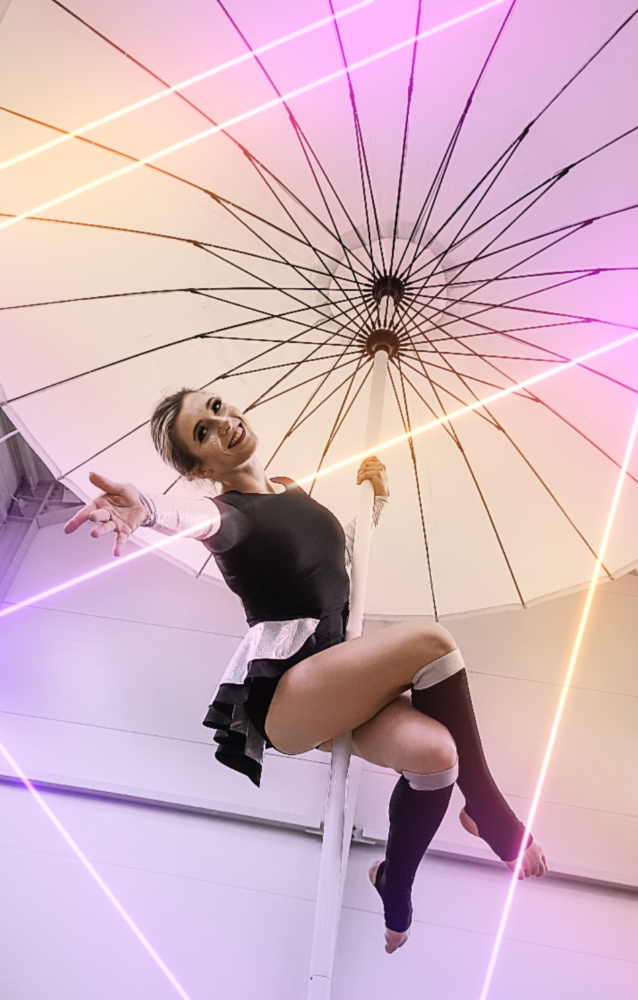

Karolina Midura - pokazy tańca w powietrzu

Z akrobatyką powietrzną jest związana od 2014 roku. Specjalizuje się w tańcu na szarfach, tańcu na kole, a także na trapezie statycznym i w hamaku.
Osiągnięcia i doświadczenie:
• I miejsce na Vertical Fit Championships - taniec na kole;
• I miejsce na Mistrzostwach Air Athletics Association - taniec na szarfach;
• Mistrzyni Polski Aerial w tańcu na kole w duecie;
• Wicemistrzyni Polski w tańcu na kole;
• Złota medalistka na międzynarodowych zawodach Crazy Hoop - taniec na kole.
• Realizacje telewizyjne (reklamy, telewizja śniadaniowa, Mam Talent - link)
• Sędzia na turniejach i konkursach
• Doświadczona trenerka akrobatyki powietrznej